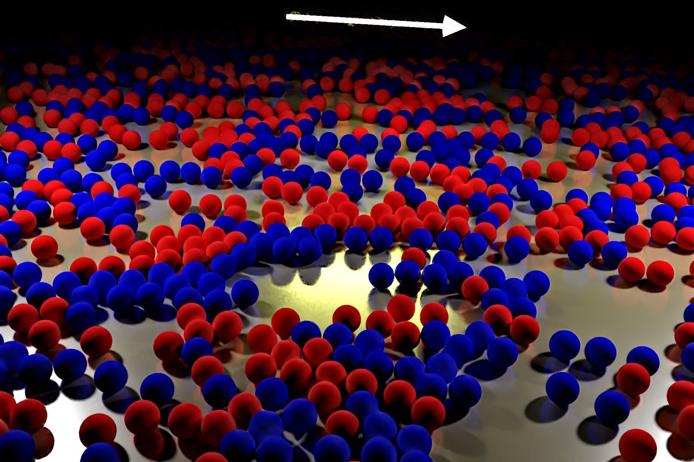
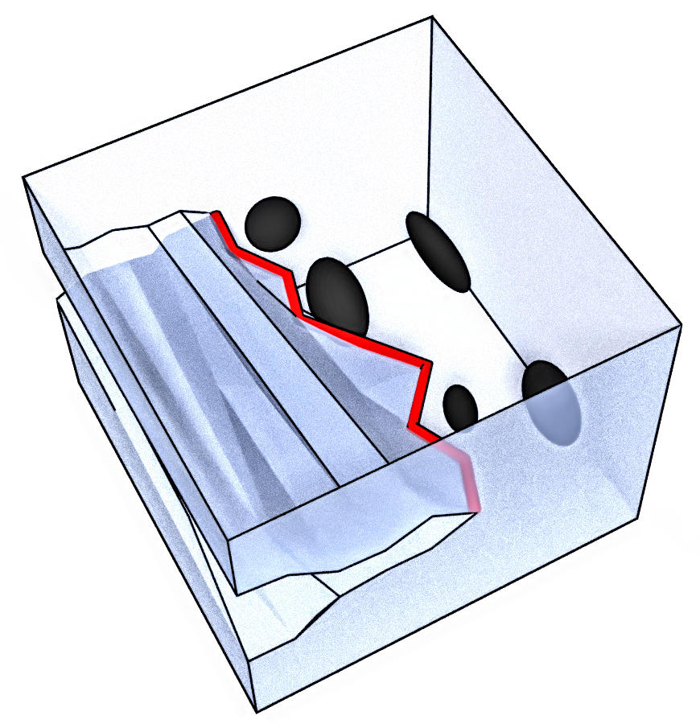
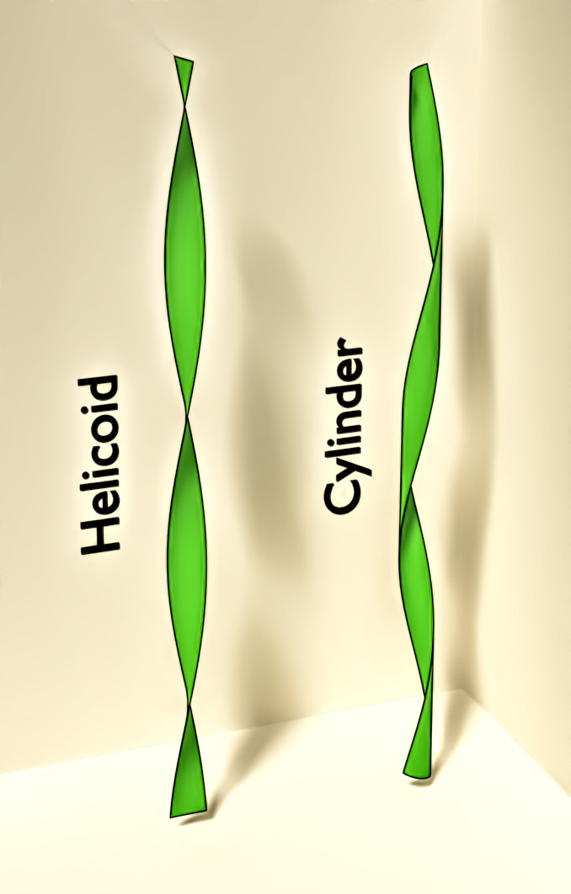

Particules et champs stochastiques
Particule brownienne en interaction avec un champ gaussien
- Drag forces in classical fields, V. Démery et D. S. Dean, Phys. Rev. Lett. 104, pp 080601 (2010).
- Drag forces on inclusions in classical fields with dissipative dynamics, V. Démery et D. S. Dean, Eur. Phys. J. E 32, pp 377–390 (2010).
- Diffusion of active tracers in fluctuating fields, D. S. Dean et V. Démery, J. Phys. : Condens. Matter 23 234114 (2011).
- A perturbative path integral study of active and passive tracer diffusion in fluctuating fields, V. Démery et D. S. Dean, Phys. Rev. E 84, 011148 (2011).
- Thermal Casimir drag in fluctuating classical fields, V. Démery et D. S. Dean, Phys. Rev. E 84, 010103(R) (2011).
- Generalized Langevin equations for a driven tracer in dense soft colloids: construction and applications, V. Démery, H. Jacquin et O. Bénichou, New. J. Phys. 16, 053032 (2014).
- Mean-field microrheology of a very soft colloidal suspension: inertia induces shear-thickening, V. Démery, Phys. Rev. E 91, 062301 (2015).
- Driven probe under harmonic confinement in a colloidal bath, V. Démery et É. Fodor, J. Stat. Mech. 2019, 033202 (2019).
Particules browniennes en interaction, corrélations

- The conductivity of strong electrolytes from stochastic density functional theory, V. Démery et D. S. Dean, J. Stat. Mech. 023106 (2016).
- Universal long ranged correlations in driven binary mixtures, A. Poncet, O. Bénichou, V. Démery et G. Oshanin, Phys. Rev. Lett. 118, 118002 (2017).
- Unbinding transition of probes in single-file systems, O. Bénichou, V. Démery et A. Poncet, Phys. Rev. Lett. 120, 070601 (2018).
- Stresses in non-equilibrium fluids: Exact formulation and coarse grained theory, M. Krüger, A. Solon, V. Démery, C. M. Rohwer et D. S. Dean, J. Chem. Phys. 148, 084503 (2018).
- N-tag probability law of the symmetric exclusion process, A. Poncet, O. Bénichou, V. Démery et G. Oshanin, Phys. Rev. E 97, 062119 (2018).
- Pair correlation of dilute active Brownian particles: From low-activity dipolar correction to high-activity algebraic depletion wings, A. Poncet, O. Bénichou, V. Démery et D. Nishiguchi, Phys. Rev. E 103, 012605 (2021).
Particules auto-propulsées
- Dynamics of a Self-Propelled Particle in a Harmonic Trap, O. Dauchot et V. Démery, Phys. Rev. Lett. 122, 068002 (2019).
- Selective and collective actuation in active solids, P. Baconnier, D. Shohat, C. Hernandèz, C. Coulais, V. Démery, G. Düring et O. Dauchot, Nat. Phys. 1745-2481 (2022).
- Noise-Induced Collective Actuation in Active Solids, P. Baconnier, V. Démery et O. Dauchot, Phys. Rev. E 109, 024606 (2024).
Interfaces élastiques désordonnées et application à la rupture
Rupture fragile, front de rupture

- From microstructural features to effective toughness in disordered brittle solids, V. Démery, A. Rosso et L. Ponson, Europhys. Lett. 105, 34003 (2014).
- Effect of disorder geometry on the critical force in disordered elastic systems, V. Démery, V. Lecomte et A. Rosso, J. Stat. Mech. 2014, P03009 (2014).
- Pinning by rare defects and effective mobility for elastic interfaces in high dimensions, X. Cao, V. Démery et A. Rosso, J. Phys. A: Math. Theor. 51 23LT01 (2018).
Rupture quasi-fragile, endommagement
- Damage spreading in quasi-brittle disordered solids: I. Localization and failure, E. Berthier, V. Démery et L. Ponson, J. Mech. Phys. Solids 102, 101-124 (2017).
- Collective Damage Growth Controls Fault Orientation in Quasibrittle Compressive Failure, V. Dansereau, V. Démery, E. Berthier, J. Weiss et L. Ponson, Phys. Rev. Lett. 122, 085501 (2019).
Dislocations
- Does the Larkin length exist?, D. Rodney, P.-A. Geslin, S. Patinet, V. Démery et A. Rosso, Modelling Simul. Mater. Sci. Eng. 32 035007 (2024).
Feuilles minces
Feuilles minces aux interfaces liquides

- Mechanics of large folds in thin interfacial films, V. Démery, B. Davidovitch et C. Santangelo, Phys. Rev. E 90, 042401 (2014).
- Optimal wrapping of liquid droplets with ultrathin sheets, J. Paulsen, V. Démery, C. Santangelo, T. Russell, B. Davidovitch et N. Menon, Nat. mat. 14,1206-1209 (2015).
- Geometry-driven folding of a floating annular sheet, J. Paulsen, V. Démery, K. Buğra Toga, Z. Qiu, T. Russell, B. Davidovitch et N. Menon, Phys. Rev. Lett. 118, 048004 (2017).
- Sculpting liquids with ultrathin shells, Y. Timounay, A. R. Hartwell, M. He, D. E. King, L. K. Murphy, V. Démery et J. D. Paulsen, Phys. Rev. Lett. 127, 108002 (2021).
Morphologie d'un ruban tendu et tordu

- Roadmap to the morphological instabilities of a stretched twisted ribbon, J. Chopin, V. Démery et B. Davidovitch, J. Elasticity 119:137–189 (2015).
- From cylindrical to stretching ridges and wrinkles in twisted ribbons, H. Pham Dinh, V. Démery, B. Davidovitch, F. Brau et P. Damman, Phys. Rev. Lett. 117, 104301 (2016).
- Cylinder morphology of a stretched and twisted ribbon, V. Démery, H. Pham Dinh et P. Damman, Phys. Rev. E 98, 012801 (2018).